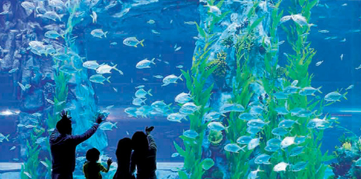
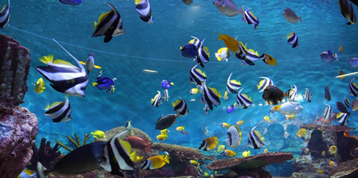
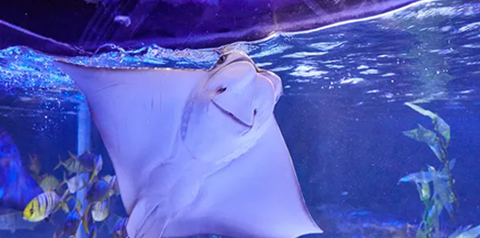
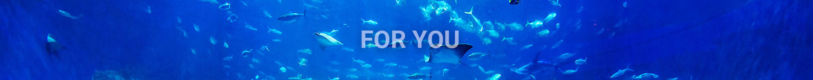
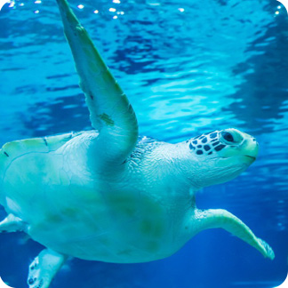
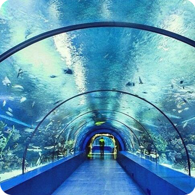
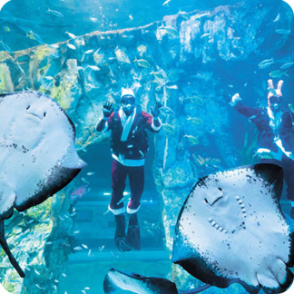

home>아쿠아리움>롯데월드 아쿠아리움
롯데월드 아쿠아리움
사람과 자연이 함께 꿈꾸는 바다
사람과 자연이 더불어 사는 즐거운 세상을 꿈꾸는 롯데월드 아쿠아리움.
깊고 드넓은 해양 생태계 그대로를 재현하겠다는 신념과 고집으로 지금까지의 아쿠아리움에 대한
모든 기준을 버리고 해양생물의 입장이 되어, 당신의 입장이 되어 원점에서부터 시작합니다.
-

- 바다를 담은 수조 설계
- 25m 넓이의 국내 최대 서식 수조
집이 되어 살아갈 친구들을 위해 바다처럼 여유로운 수조를 만듭니다.
-

- 650종 55,000마리 바다 친구들
- 다양한 해양생물들이 더불어 사는 자연
그와 동일한 서식환경을 만듭니다.
-

- 365일 청정수질
- 국내 최고 수준의 생명유지장치를 통해
청정지역 바닷물을 그대로 구현합니다.

-

- 전 세계 5대양 13개 테마
- 전 세계 바다를 그대로 옮겨놓은
다양한 테마존에서 해양생물과의
특별한 만남을 가질 수 있습니다.
-

- 생태계 따라걷기
- 강에서 연안으로, 연안에서 바다로
생태계의 흐름을 따라 걸으며
자연의 경이로움을 경험해보세요.
-

- 생생한 배움의 장
- 국내 최다 14종의 체험 교육 프로그램을
통해 해양생물과 더불어 사는
즐거움을 전합니다.